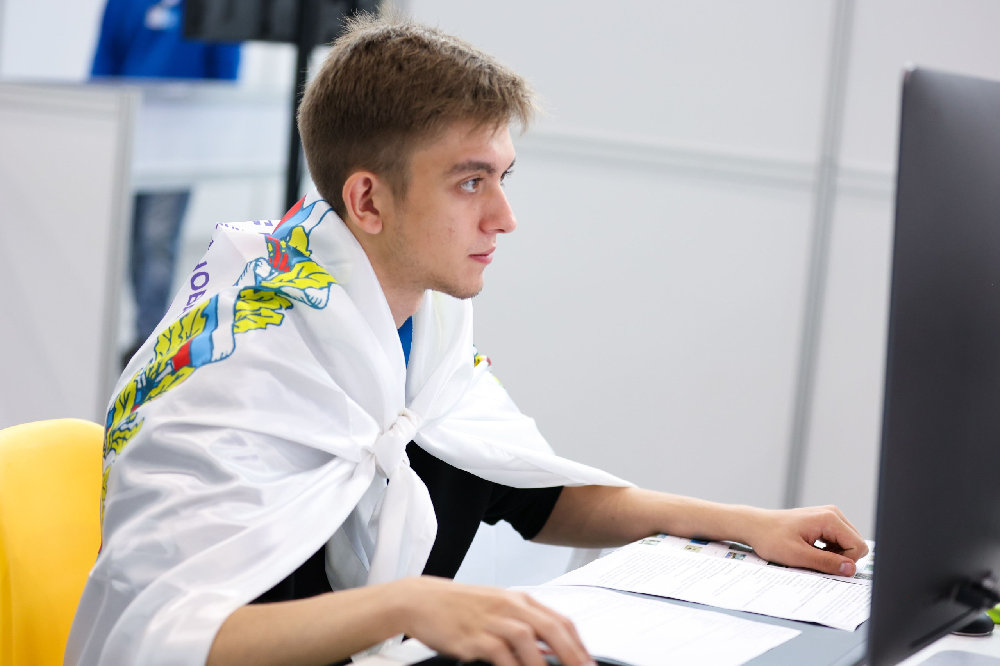
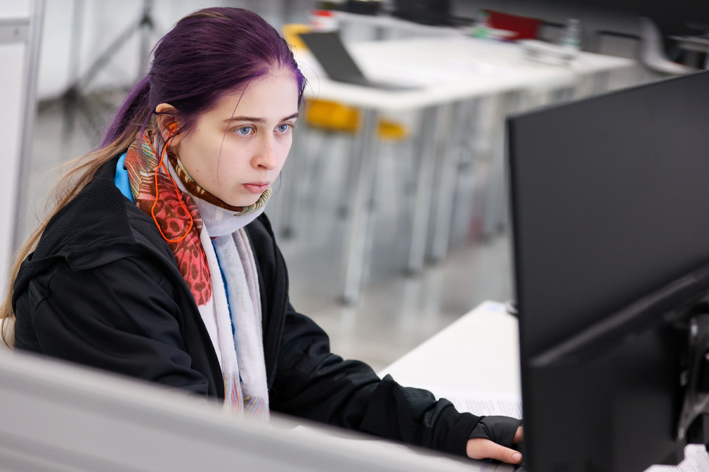
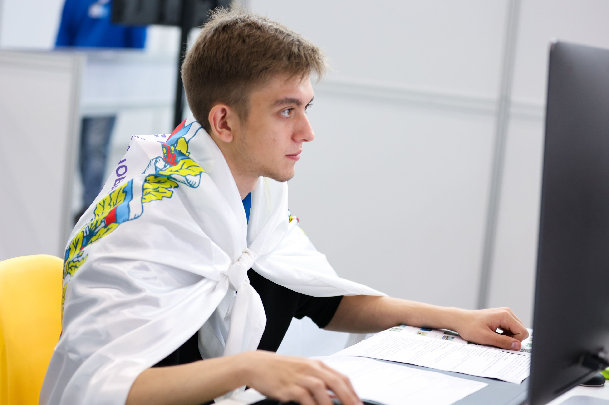
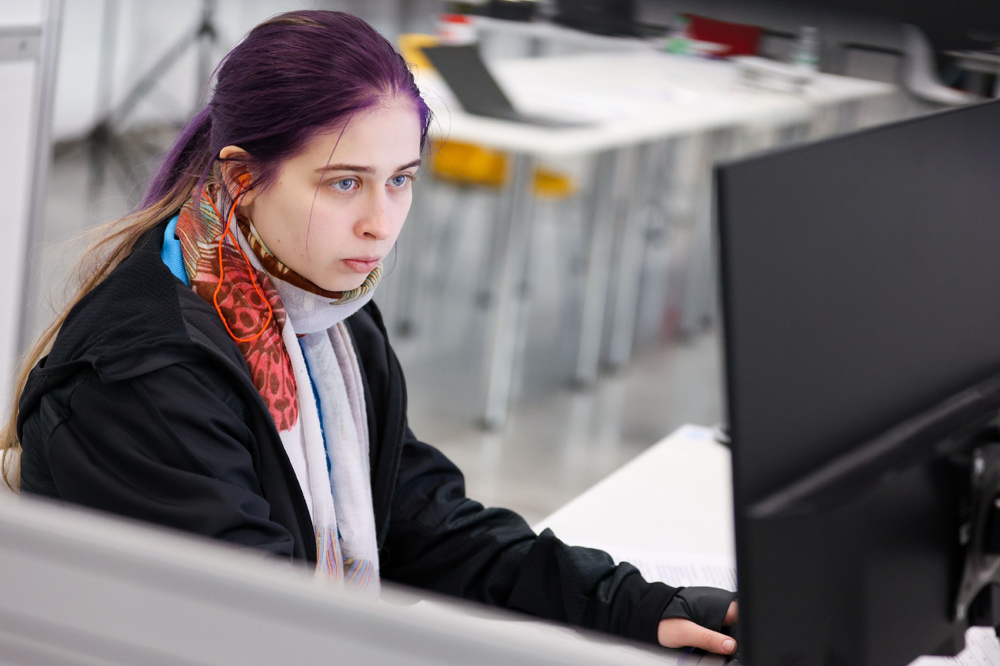

Команда РЭУ им. Г.В. Плеханова на DigitalSkills
О чемпионате
Ежегодно в г. Казани, в Республике Татарстан проводится отраслевой чемпионат в сфере информационных технологий DigitalSkills. К участию приглашаются сотрудники предприятий малого, среднего и крупного бизнеса отрасли, студенты учреждений среднего и высшего образования.
DigitalSkills – это возможность совершенствовать навыки в среде профессионалов индустрии технологий, внести вклад в цифровизацию экономики страны, обмениваться опытом и получить оценку экспертного сообщества. Чемпионат проходит более чем по 25 компетенциям в сфере информационных и цифровых технологий для конкурсантов в возрасте от 16 до 49 лет. Профессиональное мастерство конкурсантов оценивает более 300 экспертов.
Традиционно значительная часть соревнований представлена компетенциями FutureSkills. К ним относятся кросс-компетенции, которые возникают при трансформации традиционных отраслей под влиянием цифровых технологий.
Команда РЭУ

 




Список компететенций
- Веб-технологии
- Графический дизайн
- Программные решения бизнеса
- Машинное обучение и большие данные
- Преподавание английского языка в дистанционном формате
- Разработка мобильных приложений
- Разработка решений с использованием Blockchain технологии
- Специалист по стрим-технологиям
- Цифровая трансформация
- 3D моделирование для компьютерных игр
Место проведения
Местом проведения отраслевого чемпионата в сфере информационных технологий DigitalSkills ежегодно являктся международный выставочный центр «Казань Экспо». «Казань Экспо» – один из крупнейших центров в России по величине выставочных площадей, построенный специально для проведения 45-го мирового чемпионата по профессиональному мастерству по стандартам WorldSkills в г.Казани в 2019 году. «Казань Экспо» – уникальный комплекс, позволяющий проводить крупнейшие мероприятия мирового масштаба. Выставочные павильоны оснащены всеми необходимыми коммуникациями для проведения высокотехнологичных мероприятий. центр может принять несколько десятков тысяч гостей.
Организаторы чемпионата
Министерство цифрового развития, связи и массовых коммуникаций Российской Федерации, Правительство Республики Татарстан и АНО «Агентство развития профессионального мастерства (Ворлдскиллс Россия)».
блок для наглядности
Дополнительные пояснения к заданию:
Кнопка "назад" должна быть привязана к нижней правой части экрана, а не страницы,т.е. когда пользователь прокручивает страничку ссылка должна перемещаться тоже.
hm
Кнопка фиксирована снаружи, и находится в нижней правой части экрана
При прокручивании кнопка остается на месте, если я всё правильно понял